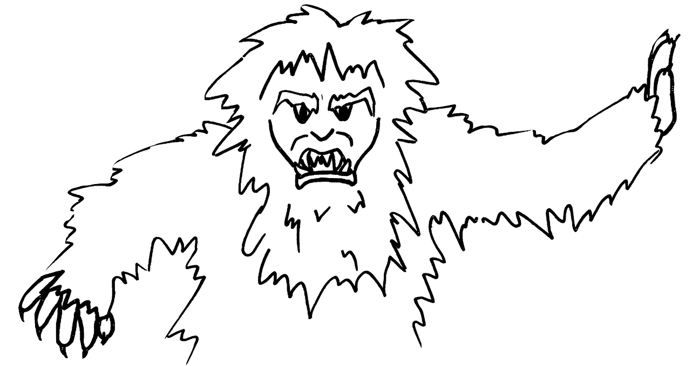

Matterhorn: 2 Deaths
On May 15, 1964, a 15-year-old boy from Long Beach, California was injured after he stood up in the Matterhorn Bobsleds and fell out. It was reported that his restraint was undone by his ride companion. He died three days later as a result of those injuries. This was Disneyland's first fatality.
On January 3, 1984, a 48-year-old woman was killed and decapitated when she was thrown from a Matterhorn bobsled car and struck by the next oncoming bobsled. The spot where she was killed is now called "Dolly's Drop" by cast members. An investigation found that her seat belt was not buckled. It is unclear whether the victim deliberately unfastened her belt or if the seat belt malfunctioned.